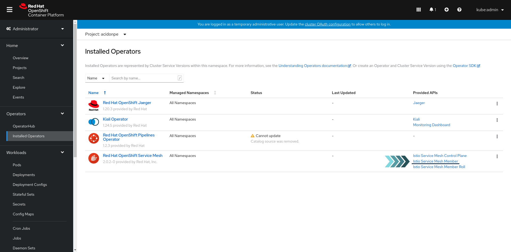

Welcome to Red Hat Service Mesh: Troubleshooting tutorial
Introduction
The general idea of Red Hat Service Mesh: Troubleshooting tutorial is to get a deep understanding of the following points:
-
Service Mesh Communication Flows
-
Ingress Traffic Troubleshooting
-
Secure Ingress Traffic Troubleshooting
-
Egress Traffic Troubleshooting
-
Secure Egress Traffic Troubleshooting
-
Troubleshooting Tools
Lab 1 - Setup
1. Prerequisites
During this tutorial, it will be required to work with different tools for running the exercises included. Please, install the following software:
| Tool | Fedora | macOS | windows | Official Documentation |
|---|---|---|---|---|
oc |
||||
git |
||||
Visual Studio Code |
2. Laboratory
Tutorial’s laboratory is basically based on the following technologies:
-
Red Hat Openshift Container Platform Cluster
-
Red Hat Service Mesh based on Istio & Envoy
In addition, a GitHub repository is provided with a set of templates and other resources which are required to create different objects in Openshift during this tutorial.
The previous technologies and resources will allow you to implement a microservice-based application in Openshift which will be included in Service Mesh. The main objective of deploying this application in Openshift using Service Mesh is to understand how Istio & Envoy are tightly related.
2.1. Laboratory Parameters
The Instructor provides users the Openshift credentials and other important parameters at the beginning of this tutorial in order to access the laboratory.
The following table includes the parameters that the Instructor should provide you at the beginning:
| Name | Reference | Example |
|---|---|---|
Openshift Cluster API (Access CLI) |
<ocp_cluster_url> |
|
Openshift Cluster Console |
<ocp_cluster_console> |
https://console-openshift-console.apps.labs.sandbox1562.opentlc.com |
Username |
<user> |
user1 |
Password |
<pass> |
P4ssw0rd |
Namespace |
<user_namespace> |
user1-namespace |
Openshift Apps Domain |
<openshift_apps_domain> |
apps.labs.sandbox1562.opentlc.com |
Kiali Url |
<kiali_url> |
https://kiali-istio-system.apps.labs.sandbox1562.opentlc.com |
Then export them:
export USER=<user>
export PASS=<pass>
export USER_NAMESPACE=<user_namespace>
export OCP_API=<ocp_cluster_url>
export OCP_APPS_DOMAIN=<openshift_apps_domain>2.2. Access Laboratory - OC Client
The OpenShift Container Platform CLI, installed before, exposes commands for managing your applications, as well as lower level tools to interact with each component of your system.
Please, review the previous settings with your Instructor and connect to the cluster executing next command from your terminal:
oc login -u $USER -p $PASS $OCP_API04-troubleshooting/oc_login_output.png[]
| Please, pay special attention to oc CLI because you will need to use this tool several times during this tutorial. |
2.3. Access Laboratory - Console
In addition, access Openshift Console using your credentials via browser in order to check connectivity and accessibility to the console:
-
<ocp_cluster_console> (E.g. https://console-openshift-console.apps.labs.sandbox1562.opentlc.com)

Lab 2 - Deploy Jump App
1. Deploy Jump App Microservices
Jump App is a microservice-based application created to emulate an enterprise application complex architecture with multi environments. This app allows users to configure a set of jumps between components and generate a continuous traffic flow defining the number of retries and their span of time.
First of all, it is required to deploy Jump App application in Openshift in order to have the demo application environment ready. The following steps in this section helps you to deploy Jump App.
1.1. Login in Openshift
oc login -u $USER -p $PASS $OCP_API04-troubleshooting/oc_login_output.png[]
1.2. Clone GitHub Repository
Jump App GitOps is one of a set of repositories developed to generate a microservice based application, named Jump App. This repository includes an automated way of deploying Jump App’s microservices and all stuff around this application (Deployments, Services, Build Configs, Pipelines, etc), including optionally CI/CD or Service Mesh objects as well.
Please, follow the next steps in order to download the GitHub repository code:

Finally, navigate to the new folder created in your system after repository download for completing all tasks included in this tutorial:
cd rh-service-mesh-v2-troubleshooting-resources1.3. Create Jump App Objects in Openshift
First of all, it is required to modify params.env file to include the parameters provided by the Instructor:
vi params.envUSER_NAMESPACE=user1-namespace
OCP_APPS_DOMAIN=apps.labs.sandbox1562.opentlc.com
Once the params file is saved, you are able to process with Jump App deployment phase:
oc project $USER_NAMESPACE
oc process -f ./02-jump-app-deploy/jump-app-template.yml --param-file=./params.env --ignore-unknown-parameters | oc apply -f -
1.4. Confirm that Jump App is already running in Openshift
Once Jump App objects have been created in Openshift, it is required to follow the next steps in order to ensure your demo app is running properly:
-
Get pods
oc get pods -n $USER_NAMESPACE
1.5. Access to Jump App
Once Jump App is already running in Openshift, it is time to access Jump App public services in order to test the application:
-
Obtain external services URLs
oc get routes -n $USER_NAMESPACE
-
Visit the back, back-golang-<user_namespace>.<openshift_apps_domain>, route via your web browser

-
Visit the front, front-javascript-<user_namespace>.<openshift_apps_domain>, route via your web browser, push - JUMP- button and ensure the following message is displaying in your screen:
...{"code":200,"message":"/jump - Greetings from Python!"}
| It is required to accept self-signed certificates provided by Openshift |
Lab 3 - Service Mesh Communication Flows
1. Added a new project to Red Hat Service Mesh Control Plane
The ServiceMeshMemberRoll lists the projects belonging to the control plane. Only projects listed in the ServiceMeshMemberRoll are affected by the control plane.
In order to add this new project to the Service Mesh and make the traffic between each microservice possible, it is required to create a new ServiceMeshMember object.
Please, create the previous object through the respective Openshift template executing the following command:
oc process -f 03-jump-app-flows/04-jump-app-ns-smr.yaml --param-file=params.env --ignore-unknown-parameters | oc apply -f - -n $USER_NAMESPACEAdditionally, you are able to check this new object through the Openshift Console:

._ServiceMeshMember Created Console - 2
 ._ServiceMeshMember Created Console - 3
._ServiceMeshMember Created Console - 3

2. Create Red Hat Service Mesh Traffic Flow objects
In order to make an application available through Service Mesh, it is required to create a set of Service Mesh objects related to the traffic flow:
-
Gateways - Describes a load balancer operating at the edge of the mesh receiving incoming or outgoing HTTP/TCP connections (Please, visit this link Gateways for more information about gateways)
-
Virtual Services - Defines a set of traffic routing rules to apply when a host is addressed (Please, visit this link Virtual Services for more information about virtual services)
-
Destination Rules - Defines policies that apply to traffic intended for a service after routing has occurred (Please, visit this link Destination Rules for more information about destination rules)
In this step, you have to be able to deploy these Jump App Service Mesh objects in order to introduce this application in the Service Mesh and publish it to external clients.
2.1. Gateways
First of all, it is required to create a Gateway for external access. In the Jump App architecture, you have a couple of services which have to be exposed to external clients in order to present the Frontend and Backend services.
Please, return to git repository and create gateways through the respective Openshift template executing the following command:
oc process -f 03-jump-app-flows/00-jump-app-gws.yaml --param-file=params.env --ignore-unknown-parameters | oc apply -f - -n $USER_NAMESPACE
2.2. Virtual Services
Once gateways are created and the application is reachable, it is time to create the traffic rules inside your namespace in order to route this traffic to the specific endpoint.
Please, create new virtual services through the respective Openshift template executing the following command:
oc process -f 03-jump-app-flows/01-jump-app-vss.yaml --param-file=params.env --ignore-unknown-parameters | oc apply -f - -n $USER_NAMESPACE
2.3. Destination Rules
Once previous objects are created, it is required to define the policies which will be applied to traffic intended for a service after routing has occurred.
Please, create new destination rules through the respective Openshift template executing the following command:
oc process -f 03-jump-app-flows/02-jump-app-drs.yaml --param-file=params.env --ignore-unknown-parameters | oc apply -f - -n $USER_NAMESPACE2.4. K8s Services
Once you have created gateways, virtual services and destination rules, it is time to include a specific annotation in your app deployments in order to allow Service Mesh control and run the respective envoy sidecar automatically.
Please, create new k8s services through the respective Openshift template executing the following command:
oc process -f 03-jump-app-flows/03-jump-app-services.yaml --param-file=params.env --ignore-unknown-parameters | oc apply -f - -n $USER_NAMESPACE
3. Final Steps
3.1. Add Istio Sidecar annotation in Jump App deployments
Once traffic flow objects are created and your namespace is included as a member in the Service Mesh Control Plane, it is time to include a specific annotation in your app deployments in order to allow Service Mesh control and run the respective envoy sidecar automatically.
Please, edit each Jump App Microservice deployment executing the commands added below:
oc patch deployment front-javascript-v1 -p '{"spec":{"template":{"metadata":{"annotations":{"sidecar.istio.io/inject":"true"}}}}}' -n $USER_NAMESPACE
oc patch deployment back-springboot-v1 -p '{"spec":{"template":{"metadata":{"annotations":{"sidecar.istio.io/inject":"true"}}}}}' -n $USER_NAMESPACEoc patch deployment back-python-v1 -p '{"spec":{"template":{"metadata":{"annotations":{"sidecar.istio.io/inject":"true"}}}}}' -n $USER_NAMESPACEoc patch deployment back-golang-v1 -p '{"spec":{"template":{"metadata":{"annotations":{"sidecar.istio.io/inject":"true"}}}}}' -n $USER_NAMESPACE
Before continuing with the following steps, please test Jump App pods status, in order to be sure that 2 replicas are running for each microservice:
oc get pods3.2. Configure Routes
An OpenShift Container Platform route exposes a service at a host name, such as www.example.com, so that external clients can reach it by name. When you manage routes outside Service Mesh, it is required to create these objects in each namespace.
Once you have a project integrated in Service Mesh, routes should be created in istio-system, or wherever the control plane is installed, to make this external service available through the Istio Ingress Gateway. For this reason, it is required to follow the next steps:
3.2.1. Delete all current routes in <user_namespace>
oc get routes -n $USER_NAMESPACE | grep -v NAME | awk '{print "oc delete route " $1 " -n $USER_NAMESPACE"}' | sh3.2.2. Create a new routes in istio-system
Once "regular" routes are deleted, it is required to create the new ones.
Please, create new routes in istio-system namespace through the respective Openshift template executing the following command:
oc process -f 03-jump-app-flows/05-jump-app-routes.yaml --param-file=params.env --ignore-unknown-parameters | oc create -f - -n istio-system
4. Confirm Jump App is running again
Once Jump App objects have been created in Openshift, it is required to follow the next steps in order to ensure your demo app is running properly:
| Look at the number of containers in each microservice, it must contains 2 container per each pod (READY 2/2). |
-
Get pods
oc get pods-
Obtain external services URLs
oc get routes -n istio-system | grep $USER_NAMESPACE
-
Visit the back, back-golang-<user_namespace>.<openshift_apps_domain>, route via your web browser
-
Visit the front, front-javascript-<user_namespace>.<openshift_apps_domain>, route via your web browser. In addition, configure [ 10000 ] retries with [ 1 ] interval and press [ JUMP ] and ensure the following message is displaying in your screen
...{"code":200,"message":"/jump - Greetings from Python!"}

| It is required to accept self-signed certificates provided by Openshift |
5. Visit Kiali
Jump App is generating traffic flow thanks to the frontend where it was given an specific number of continuous jumps. In order to review the Service Mesh traffic flow in your project, please visit the Kiali console <kiali_url> (E.g. https://kiali-istio-system.apps.labs.sandbox1562.opentlc.com):

Lab 4 - Service Mesh Ingress Traffic Flow
1. Introduction
During this section, you will customize Jump App and resolve any problems found during this customization process using the command line and Kiali as the main troubleshooting tools.
2. Ingress Gateway Traffic Flow Troubleshooting
As you might know, we have 3 important objects in Istio that are essential to redirect ingress traffic from the Ingress Gateway to the application pods in Service Mesh:
-
Gateways
-
Virtual Services
-
Destination Rules
During the following sections, you will work with these objects and test, step by step, each segment of ingress traffic route:
-
Openshift Router → Ingress Gateway
-
Ingress Gateway → Sidecar
-
Sidecar → App
| You will use OC client, curl and Kiali as the main troubleshooting tools |
3. Customize Jump App
First of all, it is required to modify Jump App Service Mesh objects in order to emulate a real life day 2 operation.
Please, return to the git repository and apply some customizations through the respective Openshift template executing the following command:
oc process -f 04-ingress-traffic-troubleshooting/00-jump-app-ingress-customization.yaml --param-file=params.env --ignore-unknown-parameters | oc apply -f - -n $USER_NAMESPACE
oc process -f 04-ingress-traffic-troubleshooting/01-jump-app-back-golang-svc.yaml --param-file=params.env --ignore-unknown-parameters | oc delete -f - -n $USER_NAMESPACE3.1. Confirm Jump App state
Once Jump App customizations have been applied, it is time to review your demo application services state.
Please, execute the following steps in order to review your demo app current state after the customization:
-
Get pods
oc get pods-
Obtain external services URLs
oc get routes -n istio-system | grep $USER_NAMESPACE
-
Visit the back, back-golang-<user_namespace>.<openshift_apps_domain>, route via your web browser

-
Visit the front, front-javascript-<user_namespace>.<openshift_apps_domain>, route via your web browser.In addition, configure [ 1 ] retries with [ 1 ] interval and press [ JUMP ] and ensure the following message is displaying in your screen

| An error message appears when the frontend tries to call backend services |
4. Openshift Router → Ingress Gateway Connectivity
4.1. Test connectivity via command line
In order to verify the connectivity from the OCP Routers to the Ingress Gateway, it is required to follow the next steps:
-
Get pods in routes namespace
oc get pods -n openshift-ingress
-
Connect to the router pod
oc project openshift-ingress
POD=$(oc get po -o jsonpath='{.items[0].metadata.name}' -n openshift-ingress)
oc rsh $POD-
Execute a HTTP request using curl command
curl -XGET -v --header "Host: back-golang-<user_namespace>.<openshift_apps_domain>" http://istio-ingressgateway.istio-system.svc.cluster.local:80 -v
| Note that the error is 404 because of the route, or path, is not found |
4.2. Fix configuration problems
After test the connectivity from the OCP routers to the ingress gateway, you should review the Gateway object configuration in order to verify its definition. Please, visit the Kiali console <kiali_url> and review the Gateway object current state:

If you take a look at the host paths closely, you can find a bad definition because of the pattern "-fail" included in the path. Please, modify this hostname and click on [ SAVE ].
4.3. Test connectivity again via command line
Once Gateway object has been modified in Openshift, it is required to test your application again through the OCP router:
-
Get pods in routes namespace
oc get pods -n openshift-ingress
-
Connect to the router pod
oc project openshift-ingress
POD=$(oc get po -o jsonpath='{.items[0].metadata.name}' -n openshift-ingress)
oc rsh $POD-
Execute a HTTP request using curl command
curl -XGET -v --header "Host: back-golang-<user_namespace>.<openshift_apps_domain>" http://istio-ingressgateway.istio-system.svc.cluster.local:80 -v| At this time, you obtain a 503 error because the service is unavailable but this host exists and it is reachable |
5. Test Ingress Gateway → Sidecar Connectivity

5.1. Test connectivity via command line
In order to verify the connectivity from the Ingress gateway to the Envoy Sidecar, via back-golang k8s service, it is required to follow the next steps:
-
Get pods in istio-system namespace
oc get pods -n istio-system-
Connect to the Ingress Gateway pod
oc project istio-system
POD=$(oc get po -l app=istio-ingressgateway -o jsonpath='{.items[0].metadata.name}' -n istio-system)
oc rsh $POD-
Execute a HTTP request using curl command
curl -XGET -v --header "Host: back-golang-<user_namespace>.<openshift_apps_domain>" http://back-golang.<user_namespace>.svc.cluster.local:8442 -v
| At this time, you obtain "Could not resolve host: back-golang.user1-namespace.svc.cluster.local" because back-golang.svc.cluster.local k8s service is not found |
5.2. Fix configuration problems
After test the connectivity from the from the Ingress Gateway to the Envoy Sidecar, via back-golang k8s service, you should create the back-golang k8s service again in order to allow this connections.
oc project $USER_NAMESPACEoc process -f 04-ingress-traffic-troubleshooting/01-jump-app-back-golang-svc.yaml --param-file=params.env --ignore-unknown-parameters | oc apply -f - -n $USER_NAMESPACE
5.3. Test connectivity again via command line
Once the k8s service has been created again in Openshift, it is required to test your application again through the Ingress Gateway:
-
Get pods in istio-system namespace
oc get pods -n istio-system04-troubleshooting/ocp-istio-controlplane-pods.png[]
-
Connect to the ingress gateway pod
oc project istio-system
POD=$(oc get po -l app=istio-ingressgateway -o jsonpath='{.items[0].metadata.name}' -n istio-system)
oc rsh $POD-
Execute a HTTP request using curl command
curl -XGET -v --header "Host: back-golang-<user_namespace>.<openshift_apps_domain>" http://istio-ingressgateway.istio-system.svc.cluster.local:80 -v| At this time, you obtain a 200 in this command but external access has an error because the service is unavailable but the k8s service is OK |
5.4. Fix configuration problems
After test the connectivity from the from the Ingress Gateway to the Envoy Sidecar, via k8s service, you should review the Virtual Service and Destination Rule objects configuration in order to verify their definition. Please, visit the Kiali console <kiali_url> and review the objects general state:

If you take a look at the host paths closely you can find a bad definition because of the pattern "-fail" included in the path. Please, modify this hostname and click on [ SAVE ].

Lastly, if you take a look at the label version you can find a bad definition. Please, replace fail with v1 version and click on [ SAVE ].
5.5. Test connectivity again via command line
Once these objects have been modified in Kiali, it is required to test your application again through the Ingress Gateway:
-
Get pods in istio-system namespace
oc get pods -n istio-system-
Connect to the Ingress Gateway pod
oc project istio-system
PPOD=$(oc get po -l app=istio-ingressgateway -o jsonpath='{.items[0].metadata.name}' -n istio-system)
oc rsh $POD-
Execute a HTTP request using curl command
curl -XGET -v --header "Host: back-golang-<user_namespace>.<openshift_apps_domain>" http://istio-ingressgateway.istio-system.svc.cluster.local:80 -v6. Test Sidecar → App Connectivity
6.1. Test connectivity via command line
In order to verify the connectivity from the Envoy Sidecar to the App containers in the same pods, it is required to follow the next steps:
-
Get pods in your namespace
oc get pods -n $USER_NAMESPACE
-
Connect to the back-golang pod
oc project $USER_NAMESPACE
oc exec -ti <back-golang_pod_id> -c istio-proxy -- sh-
Execute a HTTP request using curl command
curl -XGET -v --header "Host: back-golang-<user_namespace>.<openshift_apps_domain>" http://localhost:84427. Confirm Jump App is running again
Once Jump App objects have been modified and fixed in Kiali and Openshift, it is required to follow the next steps in order to ensure your demo app is running properly:
-
Get pods
oc get pods-
Obtain external services URLs
oc get routes -n istio-system | grep $USER_NAMESPACE
-
Visit the back, back-golang-<user_namespace>.<openshift_apps_domain>, route via your web browser
-
Visit the front, front-javascript-<user_namespace>.<openshift_apps_domain>, route via your web browser. In addition, configure [ 1000 ] retries with [ 1 ] interval and press [ JUMP ] and ensure the following message is displaying in your screen
...{"code":200,"message":"/jump - Greetings from Python!"}
| It is required to accept self-signed certificates provided by Openshift |
8. Visit Kiali
At this time, Jump App is generating traffic flow thanks to the frontend where it was given an specific number of continuous jumps. In order to review the Service Mesh traffic flow in your project, please visit the Kiali console <kiali_url>:
Lab 5 - Service Mesh Secure Ingress Traffic Flow
1. Secure Gateways with SDS
As you know, Gateway describes a load balancer operating at the edge of the mesh receiving incoming or outgoing HTTP/TCP connections.
During this step, you will review how to expose a secure HTTPS service through Openshift Router using a Gateway, a custom certificate and Istio Secret Discovery Service (SDS).
1.1. Create in Istio the Custom Certificate using SDS
In order to configure a new certificate in SDS, it is required to create a new secret in Openshift to save the respective files.
Please, create this new secret executing the following command:
oc create -n istio-system secret tls $USER_NAMESPACE-credential --key=./05-secure-ingress-traffic-troubleshooting/front.jumpapp.com.key --cert=./05-secure-ingress-traffic-troubleshooting/front.jumpapp.com.crt
1.2. Modify back-golang Route in istio-system Namespace
Once the new secret has been created, it is time to modify the back-golang OCP route in order to configure it as a passthrough route. With passthrough termination, encrypted traffic is sent straight to the Ingress Gateway without the router providing TLS termination. Therefore no key or certificate is required.
Please, modify back-golang OCP route in istio-system namespace through the respective Openshift template executing the following command:
oc process -f 05-secure-ingress-traffic-troubleshooting/00-jump-app-golang-route.yaml --param-file=params.env --ignore-unknown-parameters | oc apply -f - -n istio-system1.3. Configure Gateway
If you remember, a gateway describes a load balancer operating at the edge of the mesh receiving incoming or outgoing HTTP/TCP connections.
In order to serve this new certificate when you are accessing to Jump App back-golang service, it is required to modify the respective Gateway.
Please, modify existing frontend gateway object executing the following command:
oc process -f 05-secure-ingress-traffic-troubleshooting/01-jump-app-golang-gw.yaml --param-file=params.env --ignore-unknown-parameters | oc apply -f - -n $USER_NAMESPACE
In order to ensure the Istio Secret Discovery Service (SDS) has been configured properly, you can review the istio ingress gateway pod as shown the following picture:

2. Confirm Jump App is running
Once Jump App SDS has been modified, it is required to follow the next steps in order to ensure your demo app is running properly:
Please, execute the following steps in order to review your demo app current state after the customization:
-
Get pods
oc get pods-
Obtain external services URLs
oc get routes -n istio-system | grep $USER_NAMESPACE
-
Visit the back, back-golang-<user_namespace>.<openshift_apps_domain>, route via your web browser

-
Visit the front, front-javascript-<user_namespace>.<openshift_apps_domain>, route via your web browser.In addition, configure [ 1 ] retries with [ 1 ] interval and press [ JUMP ] and ensure the following message is displaying in your screen
| An error message appears when the frontend tries to call backend services |
3. Openshift Router → Ingress Gateway Secure Connectivity

3.1. Test connectivity via command line
In order to verify the secure connectivity from the OCP Routers to the Ingress Gateway, it is required to follow the next steps:
-
Get pods in routes namespace
oc get pods -n openshift-ingress
-
Connect to the router pod
oc project openshift-ingress
POD=$(oc get po -o jsonpath='{.items[0].metadata.name}' -n openshift-ingress)
oc rsh $POD-
Execute a HTTP request using curl command
curl --connect-to back-golang-<user_namespace>.<openshift_apps_domain>:443:istio-ingressgateway.istio-system.svc.cluster.local:443 https://back-golang-<user_namespace>.<openshift_apps_domain>/ -k -v
| Note that the Ingress Gateway is exposing back-golang service properly. For this reason, you can conclude the problem is located at the OCP route level |
3.2. Fix configuration problems
After test the connectivity from the OCP routers to the ingress gateway, you should review the Route object configuration in order to verify its definition. Please, visit the OCP console <ocp_cluster_console> and review this object current state:


If you take a look at the target port closely, you can find http2. In order to support passthrough routes and connect with Ingress Gateway secure ports, it is required define a secured port. Please, edit route, define https as target port and click on [ SAVE ].
4. Ingress Gateway → Envoy Sidecar Secure Connectivity

4.1. Force mTLS in your namespace
In Istio, PeerAuthentication defines how traffic will be tunneled (or not) to the sidecar. In order to force all connections are secured, it is required to create the following objects using the next command:
oc project $USER_NAMESPACEoc process -f 05-secure-ingress-traffic-troubleshooting/02-jump-app-sec-services.yaml --param-file=params.env --ignore-unknown-parameters | oc apply -f - -n $USER_NAMESPACE
4.2. Test connectivity via command line
In order to verify the secure connectivity from the Ingress Gateway to the Envoy Sidecar, it is required to follow the next steps:
-
Get pods in istio-system namespace
oc get pods -n istio-system-
Connect to the Ingress Gateway pod
oc project istio-system
POD=$(oc get po -l app=istio-ingressgateway -o jsonpath='{.items[0].metadata.name}' -n istio-system)
oc rsh $POD-
Execute a HTTP request using curl command
curl --header "Host: back-golang-<user_namespace>.<openshift_apps_domain>" back-golang.<user_namespace>.svc.cluster.local:8442 -v| You are receiving curl: (56) Recv failure: Connection reset by peer because PeerAuthentication STRICT mode is enabled |
4.3. Emulate regular Ingress Gateway connectivity via command line
At this point, it is time to understand how Service Mesh generates envoy traffic internal certificates. In this step, you should be able to generate a certificate from the Istio CA in order to stablish a mTLS secure connection from the Ingress Gateway to the Envoy Sidecar, back-golang.
Please, execute the following steps in order to perform the previous tasks:
-
Extract Istio CA certificates
oc project istio-system
oc extract secret/istio-ca-secret --to=. -n istio-system
-
Generate a openssl configuration file in order to be able to generate a x509v3 certificate
cat <<EOF > openssl.conf
[req]
default_bits = 2048
encrypt_key = no # Change to encrypt the private key using des3 or similar
default_md = sha256
prompt = no
utf8 = yes
req_extensions = v3_req
distinguished_name = req_distinguished_name
[req_distinguished_name]
[v3_req]
basicConstraints = CA:FALSE
keyUsage = digitalSignature, keyEncipherment
extendedKeyUsage = clientAuth, serverAuth
subjectAltName = @alt_names
[alt_names]
URI = spiffe://cluster.local/ns/istio-system/sa/istio-ingressgateway-service-account
EOF-
Generate a certificate request
openssl req -out istio.test.csr -newkey rsa:2048 -nodes -keyout istio.test.key -subj "/"
-
Generate a certificate using these CA certificates
openssl x509 -req -days 365 -CA ca-cert.pem -CAkey ca-key.pem -CAcreateserial -in istio.test.csr -out istio.test.crt -extensions v3_req -extfile openssl.conf
-
Get pods in istio-system namespace
oc get pods -n istio-system-
Copy certificates to the Ingress Gateway pod
oc project istio-system
POD=$(oc get po -l app=istio-ingressgateway -o jsonpath='{.items[0].metadata.name}' -n istio-system)
oc exec $POD -- mkdir -p /var/run/secrets/workload-spiffe-credentials/tmp/
oc exec $POD -- mkdir /var/run/secrets/workload-spiffe-credentials/tmp/<user_namespace>
oc cp istio.test.crt $POD:/var/run/secrets/workload-spiffe-credentials/tmp/<user_namespace>
oc cp istio.test.key $POD:/var/run/secrets/workload-spiffe-credentials/tmp/<user_namespace>
oc cp ca-cert.pem $POD:/var/run/secrets/workload-spiffe-credentials/tmp/<user_namespace>-
Connect to the Ingress Gateway pod
oc project istio-system
POD=$(oc get po -l app=istio-ingressgateway -o jsonpath='{.items[0].metadata.name}' -n istio-system)
oc rsh $POD
cd /var/run/secrets/workload-spiffe-credentials/tmp/<user_namespace>-
Perform a HTTP request to the k8s service back-golang using curl command
curl --connect-to back-golang-<user_namespace>.<openshift_apps_domain>:443:back-golang.<user_namespace>.svc.cluster.local:8442 https://back-golang-<user_namespace>.<openshift_apps_domain>/ -k -v
-
Once again, perform a HTTP request to the k8s service back-golang using previous certificates in this time
curl --connect-to back-golang-<user_namespace>.<openshift_apps_domain>:443:back-golang.<user_namespace>.svc.cluster.local:8442 https://back-golang-<user_namespace>.<openshift_apps_domain>/ -k -v --cacert ca-cert.pem --cert istio.test.crt --key istio.test.key
5. Confirm Jump App is running again
Once Jump App objects have been modified and fixed in Kiali and Openshift, it is required to follow the next steps in order to ensure your demo app is running properly:
-
Get pods
oc get pods-
Obtain external services URLs
oc get routes -n istio-system | grep $USER_NAMESPACE
-
Visit the back, back-golang-<user_namespace>.<openshift_apps_domain>, route via your web browser
-
Visit the front, front-javascript-<user_namespace>.<openshift_apps_domain>, route via your web browser. In addition, configure [ 1000 ] retries with [ 1 ] interval and press [ JUMP ] and ensure the following message is displaying in your screen
...{"code":200,"message":"/jump - Greetings from Python!"}
| It is required to accept self-signed certificates provided by Openshift |
6. Visit Kiali
At this time, Jump App is generating traffic flow thanks to the frontend where it was given an specific number of continuous jumps. In order to review the Service Mesh traffic flow in your project, please visit the Kiali console <kiali_url>:
Lab 6 - Service Mesh Secure Egress Traffic Flow
2. Create the External Service
In this part, you will create an external service in Openshift but away from the Service Mesh in order to create a secure service protected by mTLS.
Just a information, this service is based on Nginx server with a custom certificates generated with openssl.
2.1. Add a Custom Certificate
First of all, it is required to create the certificates which will be used by the Nginx server in order to authorize client access.
Please, follow the next steps in order to create these certificates in Kubernetes secrets:
-
Create a root certificate and private key to sign the certificate for your services
openssl req -x509 -sha256 -nodes -days 365 -newkey rsa:2048 -subj '/O=example Inc./CN=example.com' -keyout example.com.key -out example.com.crt-
Create a certificate and a private key for your custom service my-nginx.$USER_NAMESPACE-mesh-external.svc.cluster.local
openssl req -out my-nginx.$USER_NAMESPACE-mesh-external.svc.cluster.local.csr -newkey rsa:2048 -nodes -keyout my-nginx.$USER_NAMESPACE-mesh-external.svc.cluster.local.key -subj "/CN=my-nginx.$USER_NAMESPACE-mesh-external.svc.cluster.local/O=some organization"
openssl x509 -req -days 365 -CA example.com.crt -CAkey example.com.key -set_serial 0 -in my-nginx.$USER_NAMESPACE-mesh-external.svc.cluster.local.csr -out my-nginx.$USER_NAMESPACE-mesh-external.svc.cluster.local.crt-
Generate client certificate and private key:
openssl req -out client.example.com.csr -newkey rsa:2048 -nodes -keyout client.example.com.key -subj "/CN=client.example.com/O=client organization"
openssl x509 -req -days 365 -CA example.com.crt -CAkey example.com.key -set_serial 1 -in client.example.com.csr -out client.example.com.crt-
Create Kubernetes Secrets to hold the servers and CA certificates
oc project $USER_NAMESPACE-mesh-external
oc create -n $USER_NAMESPACE-mesh-external secret tls nginx-server-certs --key my-nginx.$USER_NAMESPACE-mesh-external.svc.cluster.local.key --cert my-nginx.$USER_NAMESPACE-mesh-external.svc.cluster.local.crt
-
Create secret to hold the CA certificates
oc create -n $USER_NAMESPACE-mesh-external secret generic nginx-ca-certs --from-file=example.com.crt
3. Create Nginx service
Once the certificates have been created, you should create a configuration file which contains the security settings and then deploy the Nginx server.
Please, perform the following steps in order to meet the previous requirements:
-
Create nginx.conf file in a configmap
oc create configmap nginx-configmap -n $USER_NAMESPACE-mesh-external --from-file=nginx.conf=./06-secure-egress-traffic-troubleshooting/nginx.conf-
Deploy the Nginx server
oc process -f 06-secure-egress-traffic-troubleshooting/00-nginx-svc-pod.yml --param-file=params.env --ignore-unknown-parameters | oc apply -f - -n $USER_NAMESPACE-mesh-external-
Check if the nginx pod is ready
oc get pods -n $USER_NAMESPACE-mesh-external
-
Check if the nginx service is ready
oc project $USER_NAMESPACE-mesh-external
POD=$(oc get po -l run=my-nginx -o jsonpath='{.items[0].metadata.name}')
oc rsh $POD curl https://localhost:443 -k -v| You have deployed a mTLS service and you are receiving a 400 Bad Request error because you are not using certificates to access to this service |
4. Create the Testing Microservice
In order to test your Nginx service, it is required to create a microservice-based testing tool which allows you to stablish secure connections based on mTLS.
4.1. Add a Custom Certificate
First of all, it is required to create the client and CA certificates in order to be able to generate secure connections.
Please, follow the next steps to allocate these certificates in Kubernetes secret objects:
-
Create Kubernetes Secrets to hold the clients certificates
oc project $USER_NAMESPACE
oc create -n $USER_NAMESPACE secret tls nginx-client-certs --key client.example.com.key --cert client.example.com.crt
-
Create Kubernetes Secrets to hold the CA certificates
oc create -n $USER_NAMESPACE secret generic nginx-ca-certs --from-file=example.com.crt
4.2. Create Testing Deployment
Once the certificates have been saved in Openshift, it is time to deploy your testing microsevice deployment. Essentially, this microservice is a container image with curl installed.
Please, follow the next steps to deploy this new microservice in your main namespace:
-
Create testing Service and Deployment
oc process -f 06-secure-egress-traffic-troubleshooting/01-jump-app-sleep-svc-pod.yaml --param-file=params.env --ignore-unknown-parameters | oc apply -f - -n $USER_NAMESPACE
-
Test service pod is runnign
oc get pods -n $USER_NAMESPACE4.3. Test Nginx service through testing tool
-
Test nginx service via testing microservice
oc project $USER_NAMESPACE
POD=$(oc get po -l app=sleep -o jsonpath='{.items[0].metadata.name}')
oc exec -it $POD -c sleep -- curl -v --cacert /etc/nginx-ca-certs/example.com.crt --cert /etc/nginx-client-certs/tls.crt --key /etc/nginx-client-certs/tls.key https://my-nginx.$USER_NAMESPACE-mesh-external.svc.cluster.local -k-
Verify that the server requires the clients certificate
oc project $USER_NAMESPACE
POD=$(oc get po -l app=sleep -o jsonpath='{.items[0].metadata.name}')
oc exec -it $POD -c sleep -- curl -v https://my-nginx.$USER_NAMESPACE-mesh-external.svc.cluster.local -k| You have deployed a nginx mTLS service and you are receiving a 400 Bad Request error because of not using certificates to access to this service |
5. Configure mutual TLS origination for egress traffic
When you have the testing tool and the Nginx service up and running, it is time to introduce the Egress Gateway.
As you know, an Egress Gateway defines exit points from the mesh. Egress gateways allow you to apply Istio features, for example, monitoring and route rules, to traffic exiting the mesh.
They are extensively used in organizations that have a strict security requirement that all traffic leaving the service mesh must flow through a set of dedicated nodes. These nodes will run on dedicated machines, separated from the rest of the nodes running applications in the cluster. These special nodes will serve for policy enforcement on the egress traffic and will be monitored more thoroughly than other nodes.
Another use case is a cluster where the application nodes dont have public IPs, so the in-mesh services that run on them cannot access the Internet. Defining an egress gateway, directing all the egress traffic through it, and allocating public IPs to the egress gateway nodes allows the application nodes to access external services in a controlled way.
Taking this into account, it is time to create a set of Istio objects in your namespace in order to make able this connectivity through the Egress Gateway. Please, follow the next steps to implement this scenario:
-
Create a Gateway for nginx.example.com, port 443, a destination rule and a virtual service to direct the traffic through the egress gateway
oc process -f 06-secure-egress-traffic-troubleshooting/02-jump-app-egress-gw-dr.yaml --param-file=params.env --ignore-unknown-parameters | oc apply -f - -n $USER_NAMESPACE5.1. Configure the Egress Gateway
Finally, it is required to configure the Egress Gateway to map the client certificates in order to be able to connect to external service with mTLS security.
On the other hand, it is required create a set of Istio objects in istio-system namespace in order to configure the Egress Gateway envoy proxy.
Please, follow the next steps to perform the previous tasks:
-
Create the TLS certificate in a Kubernetes secret
oc create secret -n istio-system generic $USER_NAMESPACE-mesh-external-egress-nginx-client-certs --from-file=tls.key=client.example.com.key --from-file=tls.crt=client.example.com.crt --from-file=ca.crt=example.com.crt
-
Create a destination rule and a service entry to direct the traffic from the egress gateway to the external service
oc process -f 06-secure-egress-traffic-troubleshooting/03-istio-system-dr-sds.yml --param-file=params.env --ignore-unknown-parameters | oc apply -f - -n istio-system5.2. Test the external service
Once you have the external service, the test tool microservice and the Egress Gateway configuration deployed, it is time to test the access from the application pod to the external service via Egress Gateway:
-
Test nginx service through testing pod via egress gateway
oc project $USER_NAMESPACE
POD=$(oc get po -l app=sleep -o jsonpath='{.items[0].metadata.name}')
oc exec -it $POD -c sleep -- curl -v http://my-nginx.$USER_NAMESPACE-mesh-external.svc.cluster.local -k
Lab 7 - Troubleshooting Tools
1. See traces in Jaeger
Distributed tracing is a technique that is used to tie the information about different units of work togetherusually executed in different processes or hostsin order to understand a whole chain of events in a distributed transaction. Distributed tracing lets developers visualize call flows in large service oriented architectures. It can be invaluable in understanding serialization, parallelism, and sources of latency.
OpenShift Service Mesh comes with Jaeger and you can use it to monitor distributed transactions, optimize performance and latency and to perform root cause analysis.
Before opening Jaeger to see the traces of the Jump App application, you need to create traffic, so go to the front and make several requests. After that open Jaeger, you can find the route like this:
oc get routes -n istio-system | grep jaegerOnce in Jaeger, select back-golang.<user-namespace> as the Service in the left menu and then click at the bottom on "Find Traces". You will see that several traces appear on the right:
Click on any of them and you will see the following page will all the jumps your application did and how long did they take:
Those are called spans and they represent a logical unit of work in Jaeger that has an operation name, the start time of the operation, and the duration. Spans may be nested and ordered to model causal relationships. This could help you see where is your application spending more time and find bottlenecks in an easy manner.
2. See a delay in Kiali
As you know from the last course, you can add delay to your applications in the mesh to do some testing. In this lab we are going to add a delay in the back-golang service to see how it shows in Jaeger and Kiali when a service is adding some latency to your workflow.
oc process -f 07-troubleshooting-tools/00-jump-app-delay.yaml --param-file=params.env --ignore-unknown-parameters | oc apply -f - -n $USER_NAMESPACEYou are adding 2 seconds of delay and since there are 2 jumps, the front is going to receive the response 4 seconds late. Go to the front, set several retries (maybe 10) and the Calls Interval put it in 4 to send requests every 4 seconds. Now go to Kiali and check the delay by toggling the Response Time in the Display menu. You should see something similar to this:
You’ll notice that requests in back-golang are now taking roughly 2 seconds. This capacity of Kiali to see the response time is another way of watching where your application is spending more time. But you can play with other metrics that Kiali gives you like Request Percentage, Requests per Second and even see the traffic animation and security.
3. Check a config dump
Another tool you have for troubleshooting is the config dump of the Envoy proxies of the mesh. The config dump has all the information, in JSON format, about how are the Envoy proxies configured in the mesh. To do this, you just need to execute a request to the /config_dump endpoint inside any sidecar in your mesh.
oc project $USER_NAMESPACE
POD=$(oc get po -l app=back-golang -o jsonpath='{.items[0].metadata.name}')
oc exec -it $POD -c istio-proxy -- curl localhost:15000/config_dump > dump.jsonYou will get a very long file that looks like this:
Take some time checking the config dump, since this file has all the configuration parameters of the Envoy proxies inside the Service Mesh.
4. Check the stats
Envoy also has stats of their proxies that you can see by doing a request to the /stats endpoint inside the proxy.
oc project $USER_NAMESPACE
POD=$(oc get po -l app=back-golang -o jsonpath='{.items[0].metadata.name}')
oc exec -it $POD -c istio-proxy -- curl localhost:15000/stats > stats.txtIn this file you have different metrics that Envoy collects that you can use to see the current status of the mesh. For example, in the previous lab about Traffic Management you used these stats to see the pending requests in the Circuit Breaking section. You can also see the number of http responses, how many times a specific code came in the response, total requests sent, total bytes sent, etc.
To know more about all the statistics, you could check the Envoy docs.
5. Envoy logging
Envoy even let you change the logging level inside a sidecar by doing some http requests too. If you want to see all the logging possibilities and levels, execute the following command:
oc project $USER_NAMESPACE
POD=$(oc get po -l app=back-golang -o jsonpath='{.items[0].metadata.name}')
oc exec -it $POD -c istio-proxy -- curl -X POST localhost:15000/loggingYou’ll get something similar to this, which is the list of loggers you can edit to see more information:
Now, you will change the level of one of them:
oc project $USER_NAMESPACE
POD=$(oc get po -l app=back-golang -o jsonpath='{.items[0].metadata.name}')
oc exec -it $POD -c istio-proxy -- curl -X POST localhost:15000/logging\?http=debugTo check it, run the following command:
oc project $USER_NAMESPACE
POD=$(oc get po -l app=back-golang -o jsonpath='{.items[0].metadata.name}')
oc logs -f $POD -c istio-proxyYou should start seeing http debug logs for that sidecar.
Configuration extends to all proxy sidecars, so if you do a config_dump in any sidecar you should get very similar results, but logging is specific for each sidecar, so test watching the logs of another sidecar in your namespace to check that you will not see the http debug logs as in the one you recently modified.